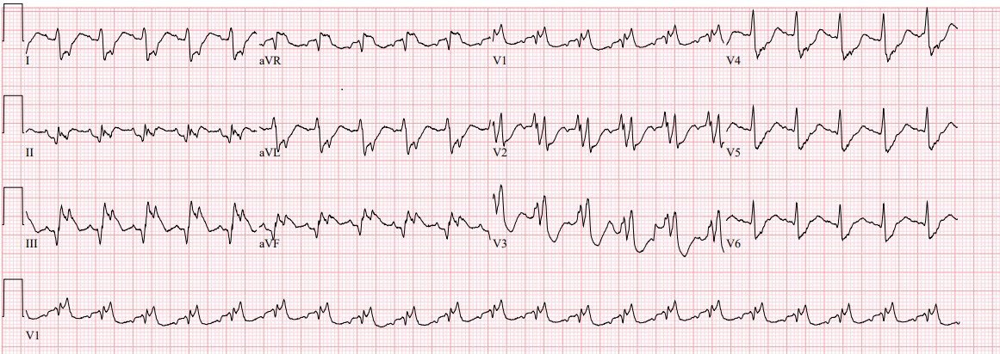
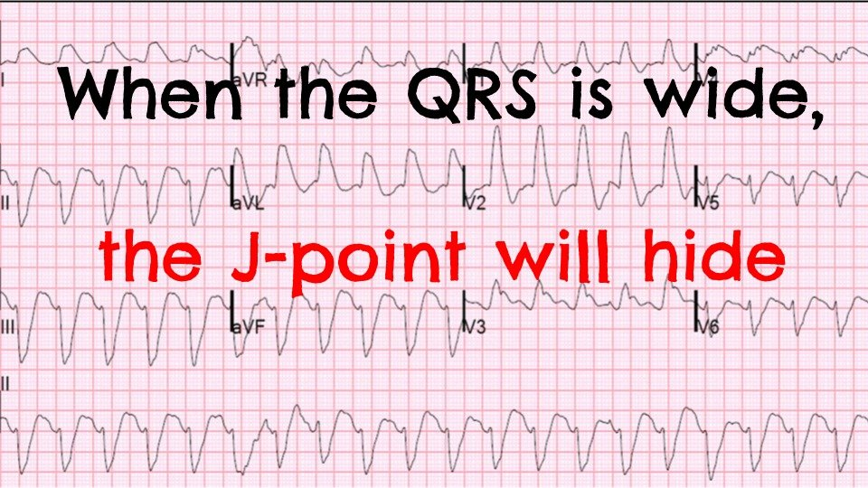
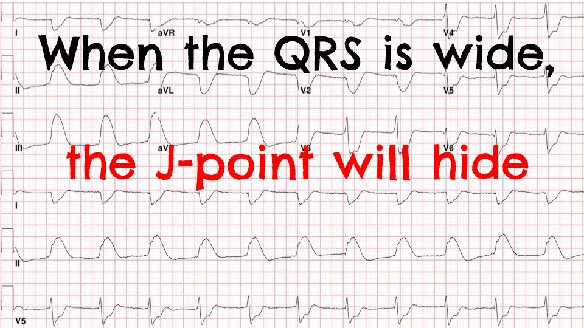
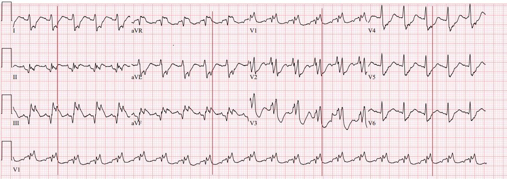
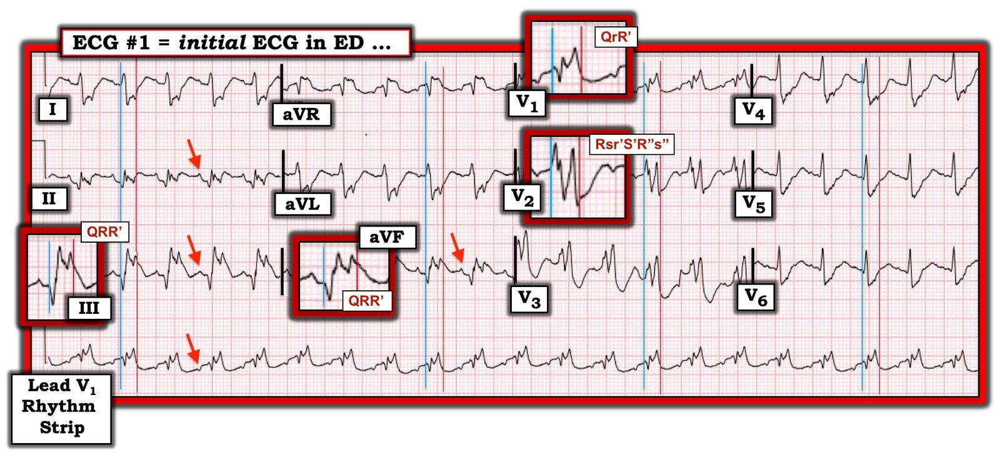

20/09/2019 — Hãy dạy người học của bạn: khi QRS rộng, điểm J sẽ ẩn, vì vậy hãy dò nó xuống và sao chép nó sang!
Bản dịch tiếng Việt của bài "Teach your learners: when the QRS is wide, the J-point will hide, so trace it down and copy it over!" – Dr. Smith’s ECG Blog. Giữ nguyên toàn bộ 7 hình ảnh của bản gốc.
Ca bệnh do Alexis Cates gửi, Pendell Meyers viết
Một người đàn ông trung niên có tiền sử tăng huyết áp (HTN), đái tháo đường (DM) và phẫu thuật sửa thông liên thất (VSD) lúc 6 tuổi, đến khoa cấp cứu (ED) vì đau ngực và vã mồ hôi khi đang tập thể dục.
Đây là điện tâm đồ ban đầu của bệnh nhân:


Hy vọng ca này quá dễ với hầu hết độc giả, nhưng nó cho thấy một OMI dưới-sau diện rộng, rõ ràng, trên nền nhịp nhanh xoang kèm RBBB và LPFB. Có thể nó quá dễ với bạn, nhưng có một điểm giảng dạy rất giá trị dành cho bạn khi bạn truyền bá kiến thức điện tâm đồ cho nhóm của mình, cho các bác sĩ nội trú, cho những người học của bạn.
Trong 3 năm qua, tôi đã cho rất nhiều bác sĩ nội trú và sinh viên y khoa xem điện tâm đồ này cùng nhiều điện tâm đồ tương tự, và tôi nhận ra rằng có một cạm bẫy rất lớn trong việc đọc điện tâm đồ của người mới học, xảy ra khi một phức bộ QRS bất thường và/hoặc kỳ dị che giấu điểm J khỏi người học. Khung tư duy của họ là tìm đoạn ST rồi đo mức độ lệch ST. Khung tư duy này rõ ràng rất thiếu chính xác cho mục đích nhận diện nhồi máu cơ tim do tắc (Occlusion MI), nhưng ít ra nó cung cấp một cách tiếp cận cho người mới học. Người học làm điều này dễ dàng khi phức bộ QRS dẫn truyền bình thường, nhưng rồi họ gặp một kiểu dẫn truyền QRS bất thường và mọi thứ trở nên khó khăn hơn nhiều, vì cách giảng dạy kinh điển theo mô hình STEMI về cơ bản chỉ áp dụng cho phức bộ QRS bình thường. Trong chương trình học ở trường y của tôi, về cơ bản không có sự giảng dạy hay hiểu biết nào về việc phải làm gì trong mô hình STEMI nếu QRS bất thường, hoặc khi điểm J không dễ thấy, với một ngoại lệ duy nhất là LBBB.
Đây là những điều cần nhớ then chốt trong bài giảng của tôi cho bác sĩ nội trú năm thứ nhất, mà dĩ nhiên chính tôi cũng đã học được lần đầu tại blog này:
1) “Khi QRS rộng, điểm J sẽ ẩn.”




2) “Khi bạn không chắc điểm J nằm ở đâu, bước tiếp theo là tìm nó ở bất kỳ chuyển đạo nào mà bạn chắc chắn hơn, rồi dò nó xuống và sao chép nó sang.”
“Dò nó xuống và sao chép nó sang” nghĩa là bạn tìm điểm J ở bất kỳ chuyển đạo nào mà bạn chắc chắn hơn về nó, rồi dò nó xuống dải nhịp để tìm điểm J trên dải nhịp, và giờ bạn có thể dùng điểm đó trên mỗi phức bộ QRS của dải nhịp để tìm điểm J ở cả 12 chuyển đạo.
Đây là kết quả ở ca này:


Quay lại ca bệnh:
Nhóm điều trị bệnh nhân này đã không bị đánh lừa và ngay lập tức hiểu rằng bệnh nhân nhiều khả năng bị nhồi máu cơ tim do tắc. Họ đã kích hoạt phòng thông tim (cath lab).
Kết quả thông tim cho thấy:
– bệnh ba nhánh mạch vành nặng
– thủ phạm: tắc 100% lỗ xuất phát (ostial) của một động mạch mũ (LCx) lớn với dòng chảy TIMI 0, PCI thành công và khôi phục dòng chảy TIMI 2-3
– tắc 100% RCA đoạn gần (TIMI 0), được cho là mạn tính do có tuần hoàn bàng hệ từ trái sang phải
– hẹp 80% LAD đoạn giữa, kèm hẹp 99% sau một mạch lớn, được cho là mạch đi trong cơ tim, có lẽ là “LAD thứ hai”
Troponin I ban đầu: 9,91 ng/mL
Troponin I 6 giờ sau thông tim: 968,3 ng/mL (nhồi máu cơ tim rất lớn)
Những điểm cần học:
Khi QRS rộng, điểm J sẽ ẩn
Khi bạn không tìm được điểm J, trước hết hãy tìm nó ở bất kỳ chuyển đạo nào, rồi dò nó xuống và sao chép nó sang.
Hãy dùng ca này và các ca sau đây để tự luyện tập và giảng dạy cho người học của bạn:
Wide Complex Tachycardia; It’s really sinus, RBBB + LAFB, and massive ST elevation (Nhịp nhanh QRS rộng; thực ra là nhịp xoang, RBBB + LAFB và ST chênh lên rất lớn)
68 phút ép tim, hồi phục hoàn toàn. Kèm theo các khuyến nghị từ một hội đồng 5 thành viên về ngừng tim.
Giant R-waves. What are they? (Sóng R khổng lồ. Chúng là gì?)
“Shark Fin”: A Deadly ECG Sign that you Must Know! (“Vây cá mập”: một dấu hiệu điện tâm đồ chết người mà bạn phải biết!)

===================================
Bình luận của KEN GRAUER, MD (20/9/2019):
===================================
Một ca rất hay của Dr. Cates & Dr. Meyers nhằm nhấn mạnh khái niệm cực kỳ quan trọng: “Khi QRS rộng — điểm J sẽ ẩn!”
- Dù vậy, tôi không đồng ý với Dr. Meyers ở một khía cạnh của ca này = ở chỗ tôi không hề nghĩ ca này “quá dễ với hầu hết độc giả”. Ngược lại, tôi thấy việc đọc điện tâm đồ này đặc biệt khó.
ĐIỂM THEN CHỐT (PEARL): Dr. Meyers nhấn mạnh rằng khi bạn không chắc điểm J nằm ở đâu — Hãy tìm một chuyển đạo mà ở đó bạn thật sự chắc chắn! Sau đó dò điểm J này xuống một dải nhịp chuyển đạo dài được ghi đồng thời — và sao chép nó sang 3 nhóm chuyển đạo được ghi đồng thời còn lại.
- Bắt đầu từ Hình điện tâm đồ trong đó các đường dọc ĐỎ của Dr. Meyers đánh dấu điểm J (tức là điểm kết thúc phức bộ QRS và bắt đầu đoạn ST) — tôi đã tái hiện điện tâm đồ ban đầu của ca này ở Hình 1. Tôi đã thêm các đường dọc mảnh màu XANH để đánh dấu điểm bắt đầu của phức bộ QRS ở mỗi chuyển đạo — rồi phóng to 1 phức bộ QRS ở một số chuyển đạo mà tôi bàn luận dưới đây.
- Với tôi — chuyển đạo V2 và V3 ở Hình 1 thể hiện ranh giới rõ nhất cho điểm bắt đầu và điểm kết thúc của phức bộ QRS. Làm theo hướng dẫn của Dr. Meyers cho phép chúng ta xác định vị trí của các điểm ranh giới bắt đầu và kết thúc này trên dải nhịp chuyển đạo V1 dài được ghi đồng thời. Sau đó chúng ta có thể kéo các đường dọc XANH và ĐỎ lên để đánh dấu điểm bắt đầu và kết thúc của phức bộ QRS ở các chuyển đạo diễn ra đồng thời I, II, III — aVR, aVL, aVF — và V4, V5 và V6 (Hình 1).


SUY NGHĨ CỦA TÔI về ĐIỆN TÂM ĐỒ #1: Thấy sóng P xoang ở một số chuyển đạo (các mũi tên ĐỎ ở Hình 1). Dù biên độ nhỏ — các sóng P này rõ ràng dương ở chuyển đạo II với khoảng PR cố định và bình thường, xác định nhịp xoang.
- Phức bộ QRS cực kỳ rộng (tôi đo được ~0,19 giây) — và, hình thái QRS thì kỳ dị!
- Mặc dù sự hiện diện của phức bộ QRS dương ưu thế ở chuyển đạo V1 — kết hợp với sóng R khá mảnh ở các chuyển đạo bên I và V6, cả hai đều có sóng S tận rộng, là phù hợp với RBBB (Right Bundle Branch Block — blốc nhánh phải) — hình thái QRS ở nhiều chuyển đạo trong Hình 1 là kỳ dị! Bạn đã bao giờ thấy một phức bộ Rsr’S’R’’s’’ như thấy rõ ở chuyển đạo V2 chưa?
ĐIỂM THEN CHỐT (PEARL): Sự hiện diện của QRS giãn rộng rõ rệt như vậy + hình thái QRS kỳ dị ở rất nhiều chuyển đạo + các khía bất thường như vậy (phân mảnh) ở rất nhiều chuyển đạo — cho chúng ta biết rằng bệnh nhân này hẳn phải có một dạng bệnh tim nền đáng kể! Đây không phải là kiểu hình thái QRS gặp trong RBBB đơn thuần, có hay không kèm blốc phân nhánh.
- Khi hình thái QRS bị biến đổi nhiều như chúng ta thấy ở Hình 1 (nhất là ở các chuyển đạo được phóng to) — quy trình thông thường để đánh giá thay đổi ST-T cũng sẽ bị biến đổi.
- Bệnh sử là MẤU CHỐT. Bệnh nhân này đã được phẫu thuật sửa VSD (Ventricular Septal Defect — thông liên thất) lúc 6 tuổi — và giờ ông là một người đàn ông trung niên.
- Hình ảnh điện tâm đồ của bệnh nhân VSD rất đa dạng — tùy thuộc vào tuổi bệnh nhân; kích thước và vị trí của VSD; mức độ dòng shunt và các thay đổi huyết động kéo theo; có hay không được phẫu thuật sửa chữa — đó là chỉ kể vài yếu tố. Có thể xem tổng quan ngắn bằng hình ảnh về điện tâm đồ của một số bệnh nhân VSD trong bài BLOG của Dr. Mete Alpaslan về chủ đề này. Điều đáng chú ý — điện tâm đồ duy nhất trong 1 trên 6 điện tâm đồ mà Dr. Alpaslan đăng có hình thái QRS kỳ dị là của một bệnh nhân có chuyển vị đại động mạch kèm VSD. Sau đó tôi đã tìm kiếm trên Google cụm “VSD ECG” — và trong 50+ bản ghi đầu tiên được đăng (BẤM VÀO ĐÂY) — tôi không thấy một bản ghi nào có QRS rộng và kỳ dị như ở Hình 1 bên trên. Vì vậy, với TÔI — hình thái QRS kỳ dị mà chúng ta thấy ở Hình 1 cho thấy khả năng bệnh nhân này có nhiều hơn hẳn chỉ một “phẫu thuật sửa VSD lúc 6 tuổi” đơn thuần.
- Điện tâm đồ nền của bệnh nhân này trông như thế nào? Hình ảnh ST-T “nền” có thể đã bất thường nhiều hơn hẳn so với chúng ta nghĩ … — và với tôi, đây chính là điều khiến ca này khó đến vậy.
- Dù vậy — tôi hoàn toàn đồng ý rằng có các lệch ST-T rõ rệt (ST chênh lên và ST chênh xuống) ở nhiều chuyển đạo trong Hình 1 (theo cách đánh dấu điểm J của Dr. Meyers) — vì vậy phải mặc định STEMI cấp cho đến khi chứng minh được điều ngược lại ở bệnh nhân trung niên này với đau ngực mới khởi phát.
- Dù vậy — Những sóng Q thành dưới rất lớn ở Hình 1 có mới không? Chúng đã có ở đó bao lâu rồi?
- Bệnh nhân này được phát hiện có bệnh 3 nhánh mạch vành nặng. Liệu điện tâm đồ ở Hình 1 có phải chỉ phản ánh một trong hàng loạt cơn nhồi máu cơ tim mà bệnh nhân này đã từng trải qua? Phức bộ QRS của bệnh nhân này đã kỳ dị như thế này trong nhiều năm rồi chăng? Một lần nữa, theo Dr. Meyers — Chúng ta phải mặc định STEMI cấp cho đến khi chứng minh được điều ngược lại — nhưng tôi ngờ rằng còn nhiều điều hơn thế …
Tôi đã rất muốn biết thêm về tiền sử của bệnh nhân này — và được xem điện tâm đồ “nền” của ông.
Chúng tôi xin CẢM ƠN Dr. Cates và Dr. Meyers đã trình bày ca bệnh mang tính giáo dục này!